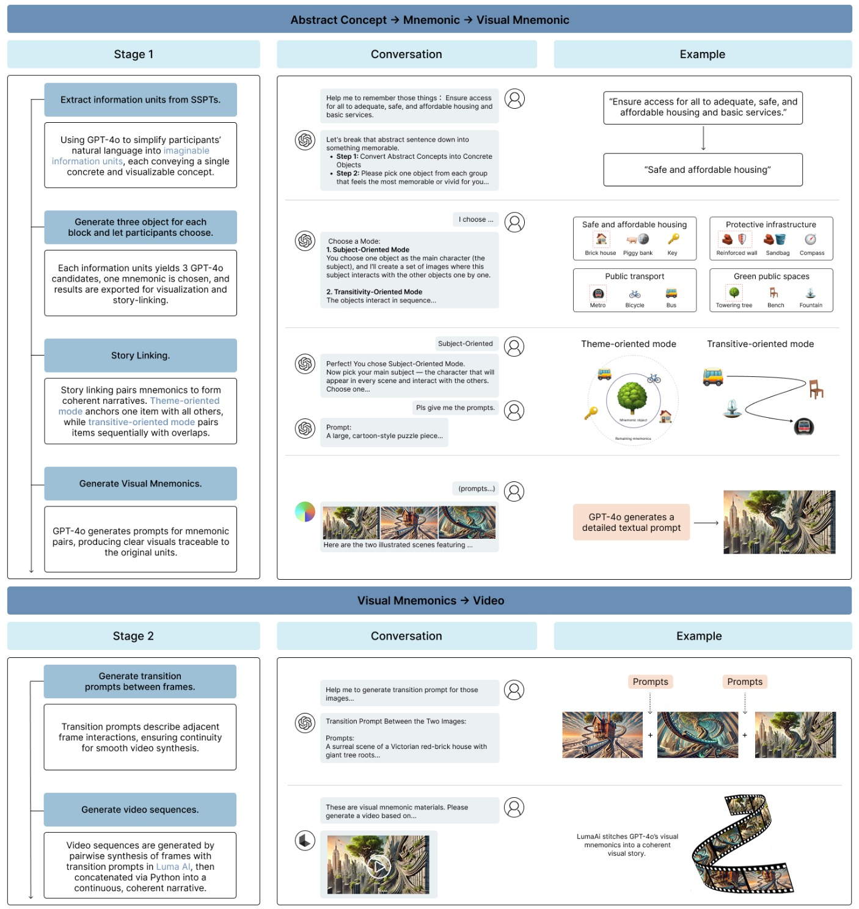
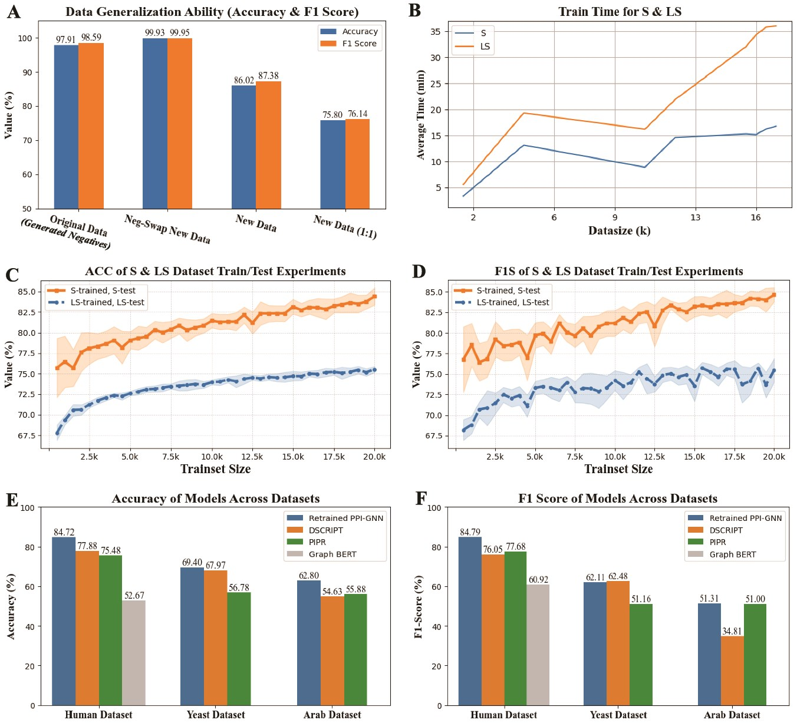

|
Jingquan (Renny) Li
Hello! I'm Jingquan Li, or you can call me Renny. You can also
hear how to pronounce my name.
I'm a second-year Ph.D. student in Electrical Engineering and Computer Science (EECS)
at University of California, Merced,
advised by Prof. Ahmed Sabbir Arif.
My research interests lie in Human-Computer Interaction (HCI)
and Brain-Computer Interfaces (BCI).
I graduated with a B.Eng. in Computer Science from
The Chinese University of Hong Kong, Shenzhen,
where I worked with Prof. Haizhou Li in the C3 Lab.
During my undergraduate studies, I also conducted research with
Prof. Xiang Wan at the Shenzhen Research Institute of Big Data, and Prof. Pengcheng An at SUSTech.
Outside academia, I'm a passionate drummer and music lover with a broad taste across fusion, R&B, nu-metal, progressive rock, metalcore, and post-rock.
Some of my favorite bands include Bring Me The Horizon, toe, Linkin Park, and Polyphia.
Thanks for stopping by! Feel free to reach out:
jingquanli@ucmerced.edu
Email /
CV /
Scholar /
Github /
LinkedIn /
ORCID
|
|
Research
My research interests lie in Human-Computer Interaction (HCI) and Brain-Computer Interfaces (BCI). I am broadly interested in how neural and physiological signals can be used to understand human perception and emotion, and how these insights can enable more natural and accessible forms of interaction.
|
|

|
GenMemo: Exploring Narrative Chaining Visual Mnemonics to Support Memorization of Structured Proposition Texts
Chenwei Liang, Jingquan Li, Mengfan Ellen Li, Nananqi Wang, Can Sun, Ye Lin, Pengcheng An
CHI EA '26: Proceedings of the Extended Abstracts of the 2026 CHI Conference on Human Factors in Computing Systems, 2026
Paper
We present GenMemo, a GenAI-enabled pipeline that transforms abstract concepts in structured propositional texts into concrete visual mnemonics to support encoding and recall. A three-group between-subjects study (N=69) shows that GenMemo improves immediate and delayed recall when adjacent frames share one mnemonic in overlapping pairs.
|
|

|
Enhancing cross-domain protein and peptide interaction with retrained deep learning models
Xin Cao, Jingquan Li, Fanpeng Meng, Bing Yang, Yanyan Zou
Briefings in Bioinformatics, 2025
Paper /
GitHub
We propose a multilevel deep learning framework retrained on short-protein datasets to improve the prediction and analysis of protein–peptide interactions, aiding peptide drug target discovery and viral infection research.
|
|